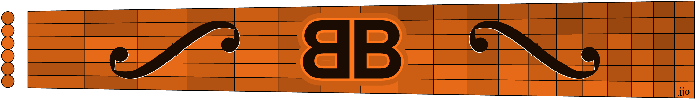

Bassi? Yes, two basso continuos from the Italian Baroque period. It's not the Italian word for double bass, but rather the Baroque practice of improvising higher parts from a basic bass line, even on a harpsichord. Sort of a 17th-century jazz lead sheet.
Back-to-back? Yes, Bach wrote only two violin concertos and they were likely composed at the same time (~1720) so they have back-to-back BWV numbers. And they both rely heavily on basso continuos in the slow movements. Listen to the deep bass openings on these 8K youtubes: BWV1041 and BWV1042 courtesy of Voices of Music, a non-profit early-music group in San Francisco.
This month's sightreading handout* compresses those low bass parts and later high violin parts into the same octaves for sightreading on guitar in first position. Surprisingly that works as a melody, but that's not at all the same experience as the full-bandwidth originals. They would be much better if arranged for a guitar-bass duo, or maybe a mandolin-guitar-bass trio. Links to the original scores on IMSLP are provided in case you want to give that a try.
For now, imagine those bassi and violini as you sightread these back-to-back Bach exercises.